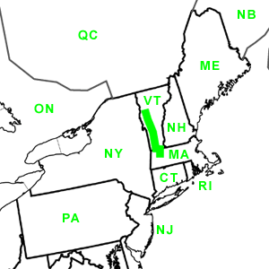

Day Forty-Three
Burlington, VT - Greenfield, MA
Date: 07/23/2002
Distance: 184 miles
Weather: Rainy 70's
Our last day!
Had a lazy morning, then left mid-day for home. We took route 7 the whole way so that we could stop to see Jared's grandmother, Aunt, Uncle, and cousins.
This journey, which seem to take forever when Jared was a kid, was quick in comparison to the 12 hour driving days that we were getting used to. It was great to catch up with the family.
We then hopped in the car one last time, and drove the two hour stretch across Vermont on route 9, and then south on 91 to our home.
We unpacked the necessities and rushed inside to soak up all the comforts of home.